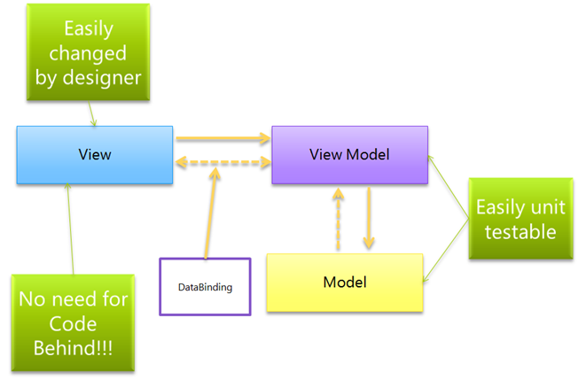

src1
Различия между MVVM и остальными MV*-паттернами
От переводчика:
Уже опубликовано много материалов по MVC и его производным паттернам, но каждый понимает их по-своему. На этой почве возникают разногласия и холивары. Даже опытные разработчики спорят о том, в чем отличие между MVP, MVVM и Presentation Model и что должен делать тот или иной компонент в каждом паттерне. Ситуация усугубляется еще и тем, что многие не знают истинную роль контроллера в классическом варианте MVC. Предлагаю вашему вниманию перевод хорошей обзорной статьи, которая многое проясняет и расставляет всё по своим местам.
Прежде чем мы начнем погружаться в детали паттерна Model-View-ViewModel (MVVM), я думаю, будет полезно описать сходства и различия между MVVM и другими шаблонами проектирования для разделения модели и представления (MV*-паттерны).
Существует довольно много MV*-паттернов: Model-View-Controller, Model-View-Presenter, Presentation Model, Passive View, Supervising Controller, Model-View-ViewModel и многие другие:

Глядя на схемы, вы, конечно же, видите, что стрелки показывают отношения между компонентами. Но только ли в этом различие? Является ли Controller тем же, что и Presenter или PresentationModel? Как бы вы сравнили между собой Model-View-Presenter и Model-View-ViewModel? В данной статье я собираюсь описать сходства и различия между наиболее распространенными MV*-паттернами.
Построение UI без использования MV*-паттернов
Как бы вы построили пользовательский интерфейс (UI), не используя вышеперечисленные паттерны? Взяли бы форму, добавили на нее виджеты, а логику написали бы в коде.
Typically, you’d create a form or user control, drag your controls on it and put the logic in the code behind.
Такой код, описывающий логику View, жёстко связан с пользовательским интерфейсом, так как он напрямую взаимодействует с элементами на экране. Это хороший, но прямолинейный подход. Он применим только для очень простых интерфейсов. Когда логика становится более сложной, поддержка такого UI может превратиться в кошмар!
Корень проблемы заключается в том, что построение UI таким способом нарушает принцип единственной ответственности (single responsibility principle), который гласит: «У класса должна быть только одна причина для изменения». Если UI-компонент содержит код для отображения, а также логику и данные, то у него есть несколько причин для изменения.
If a UI component has code for visualization, logic and data, it effectively has several reasons for changing.
Например, если вы хотите поменять тип пользовательского элемента, который используется для отображения данных, то изменения не должны повлиять на логику. Однако поскольку логика так тесно связана с элементами управления, ее тоже придется менять. Это так называемый «код с душком» (
code smell), который сигнализирует, что нарушен принцип единственной ответственности.
Таким образом, если форма содержит код для отображения элементов управления, логику интерфейса (что происходит при нажатии кнопки) и данные для отображения на экране, вы столкнетесь со следующими проблемами:
- Усложнение поддержки (Decreased Maintainability)
Изменения в UI, логике или данных, скорее всего, повлекут за собой изменения в остальных частях. Поэтому вносить правки гораздо сложнее, что затрудняет поддержку.
- Ухудшение тестируемости (Decreased Testability)
Логика и данные приложения могут быть написаны таким образом, чтобы каждый компонент мог быть протестирован отдельно. Однако код, связанный с пользовательским интерфейсом, плохо поддается модульному тестированию, потому что для этого часто требуется участие пользователя для запуска логики в UI. Кроме того, любая визуализация часто требует оценки со стороны человека, что всё «выглядит правильно». Отметим, что существуют решения для автоматизации тестирования пользовательского интерфейса. Однако они только имитируют взаимодействие с пользователем. Как правило, они сложнее в настройке и обслуживании, чем unit-тесты, и чаще всего используются при интеграционном тестировании, так как для этого требуется запуск всего приложения.
- Уменьшение возможности переиспользования (Decreased Reusability)
Если ваш UI-код смешан с кодом логики и данных, то его становится гораздо сложнее переиспользовать.
Цели MV*-паттернов (The goals of separated presentation patterns)
Хотя каждый из паттернов имеет довольно много отличий, их цели похожи: отделить UI-код (View) от кода логики (Presenter, Controller, ViewModel и т. д.) и кода обработки данных (Model). Это позволяет каждому из них развиваться самостоятельно. Например, вы сможете изменить внешний вид и стиль приложения, не затрагивая логику и данные.
- M - код обработки данных (Model)
- V - UI-код (View)
- C - код логики (Presenter, Controller, ViewModel и т. д.)
Кроме того, так как логика и данные отделены от отображения, то они могут быть протестированы отдельно. Для простых приложений это может быть не так важно. Например, если ваше приложение является простым редактором данных. Однако, если у вас более сложная логика интерфейса, то возможность автоматически проверить, что она работает правильно, будет очень ценной.
Model-View-Controller
Одним из самых первых паттернов для отделения представления от логики и модели стал Model-View-Controller (MVC). Эта концепция была описана Трюгве Реенскаугом.
В 1979 году! (Я тогда ещё даже не родился).
Этот паттерн был разработан для написания приложений на Smalltalk. Но в те дни, программирование было не таким, как сегодня. Не было Windows. Не было графического интерфейса пользователя. Не было библиотек виджетов. Если вы хотите пользовательский интерфейс, его нужно отрисовать самостоятельно. Или если вы хотите взаимодействовать с устройствами ввода, такими как клавиатура.
Но то, что сделал Трюгве было весьма революционным. Там, где все смешивали код отображения, логики и данных, он применил паттерн, чтобы разделить эти обязанности между отдельными классами.
Проблема паттерна MVC состоит в том, что это, вероятно, один из самых неправильно понятых паттернов в мире. И я думаю, это из-за названия. Трюгве сначала назвал паттерн Model-View-Editor, но позже остановился на Model-View-Controller. Понятно, что такое Model (данные) и что такое View (то, что я вижу на экране). Но что такое Сontroller? Является ли Application Controller таким же, как в паттерне MVC? (Нет, но вы можете увидеть, откуда взялась путаница).

Что же представляют собой эти Model, View и Controller:
- Model
Модель – это данные вашего приложения, логика их получения и сохранения. Зачастую это модель предметной области (domain model), основанная на базе данных или на результатах от веб-сервисов. В некоторых случаях domain model хорошо проецируется на то, что вы видите на экране. Но иногда перед использованием ее необходимо адаптировать, изменить или расширить.
- View
Представление отвечает за отображение UI на экране. Без библиотек виджетов, это означало самостоятельную отрисовку блоков, кнопок, полей ввода и т. п. View также может наблюдать за моделью и отображать данные из неё.
- Controller
Контроллер обрабатывает действия пользователя и затем обновляет Model или View. Если пользователь взаимодействует с приложением (нажимает кнопки на клавиатуре, передвигает курсор мыши), контроллер получает уведомление об этих действиях и решает, что с ними делать: игнорить, или обновлять модель, или обновлять UI.
- Model
The model typically is the data of your application and the logic to retrieve and persist that data. Often, this is a domain model that can be based on a database or the results from web services. In some cases, that domain model maps perfectly to what you see on the screen, but in other cases it has to be adapted, aggregated or extended to be usable.
- View
The View was responsible for drawing the UI on the screen. Without windows or controls, that meant drawing, boxes, buttons, input fields, etc on the screen. The View can also monitor the model and display any data in it or update itself if the data changes.
- Controller
The controller is responsible for handling the User Input and then updating the Model or the View. So if the user is interacts with the application, IE: presses a button on the keyboard, moves the mouse, the controller is notified of that user gesture and decides what to do with it. Maybe it should update the view, maybe it should update the model.
Примечание от переводчика:
Следует отметить, что Controller получает события ввода напрямую, а не через View. Контроллер интерпретирует пользовательский ввод от клавиатуры или мыши, и посылает команды модели и/или представлению внести соответствующие изменения.
Я написал пример на скорую руку для иллюстрации того, как будет выглядеть контроллер в «чистой» реализации MVC. Я его реализовал на обычном asp.net (не asp.net MVC), но без применения каких-либо пользовательских элементов управления. Так что это более традиционный asp стиль. (Да, это не очень удачный пример, но я надеюсь, что он станет отправной точкой к пониманию истинной роли контроллера).
public class Controller
{
private readonly IView _view;
public Controller(IView view)
{
_view = view;
HttpRequest request = HttpContext.Current.Request;
if (request.Form["ShowPerson"] == "1")
{
if (string.IsNullOrEmpty(request.Form["Id"]))
{
ShowError("The ID was missing");
return;
}
ShowPerson(Convert.ToInt32(request.Form["Id"]));
}
}
private void ShowError(string s)
{
_view.ShowError(s);
}
private void ShowPerson(int Id)
{
var model = new Repository().GetModel(Id);
_view.ShowPerson(model);
}
}
После многих лет парадигма программирования несколько изменилась – появились пользовательские элементы управления (виджеты). Виджеты как отрисовывают самих себя, так и интерпретируют пользовательский ввод. Кнопка знает, что делать, если вы кликните по ней. Поле ввода знает, что делать, если вы вводите текст в нём. Это уменьшает потребность в контроллере, и паттерн MVC стал менее актуальным. Однако так как по-прежнему существует необходимость отделения логики приложения от представления и от данных, набрал популярность другой паттерн под названием Model-View-Presenter (MVP).
Большинство примеров паттерна MVC фокусируются на очень небольших компонентах, таких как реализация текстового окна или реализация кнопки. При использовании более современных технологий пользовательского интерфейса (Visual Basic 3 является современным по сравнению со Smalltalk 1979), как правило, нет необходимости в этом паттерне. Но он может помочь, если вы разрабатываете свой виджет, используя очень низкий уровень API (например, Direct X).
Последние пару лет паттерн MVC стал снова актуальным, но уже по другой причине, в связи с появлением ASP.NET MVC. Фреймворк ASP.NET MVC не использует концепцию виджетов в отличии от ASP.NET. В ASP.NET MVC View представляет собой элемент управления ASPX, который отрисовывает HTML. И контроллер снова обрабатывает действия пользователя, так как он принимает HTTP запросы. На основании http-запроса он определяет, что делать (обновить Model или отобразить конкретную View).
Model-View-Presenter
С развитием среды визуального программирования и внедрения виджетов, которые инкапсулирует отрисовку и обработку пользовательского ввода, отпала необходимость в создании отдельного класса контроллера. Но разработчики всё ещё нуждаются в отделении логики от представления, только теперь на более высоком уровне абстракции. Потому что оказалось, что если вы создаете форму из нескольких пользовательских элементов, она также содержит и логику интерфейса и данных(UI logic and the data). Паттерн MVP описывает, как отделить UI от логики интерфейса (что происходит при взаимодействии с виджетами) и от данных (какие данные отображать на экране).
The Model View Presenter pattern describes a way to separate out the visual elements (Controls) from the Logic (What happens when you interact with the controls) and the Data (what data is displayed in the view).
- Model
Это данные вашего приложения, логика их получения и сохранения. Зачастую она основана на базе данных или на результатах от веб-сервисов. В некоторых случаях потребуется ее адаптировать, изменить или расширить перед использованием во View.
- View
ВИД обычно это пользовательский элемент управления или форма, которая объединяет более мелкие виджеты в интерфейс пользователя. Пользователь может взаимодействовать с элементами управления на UI, но когда какое-нибудь действие пользователя потребует выполнение какой-либо логики, то View будет направит его обработку к презентеру.
- Presenter
Презентер содержит всю логику, необходимую для пользовательского интерфейса, и отвечает за синхронизацию модели и представления. Когда представление уведомляет презентер, что пользователь что-то сделал (например, нажал кнопку), презентер принимает решение об обновлении модели и синхронизирует все изменения между моделью и представлением.
- Model
The model typically is the data of your application and the logic to retrieve and persist that data. Often, this is a domain model that can be based on a database or the results from web services. In some cases, that domain model maps perfectly to what you see on the screen, but in other cases it has to be adapted, aggregated or extended to be usable.
- View
The View is typically a user control or form that combines several (smaller grained controls) into a (part of a) user interface. The user can interact with the controls in the View, but when some logic needs to be started, the view will delegate this to the presenter.
- Presenter
The presenter holds all the logic for the view and is responsible for synchronizing the model and the View. When the view notifies the presenter that the user has done something (for example, clicked a button), the presenter will then update the model and synchronize any changes between the Model and the View.
Стоит отметить одну важную вещь, что презентер не общается с представлением напрямую. Вместо этого, он общается через интерфейс. Благодаря этому презентер и модель могут быть протестированы по отдельности.
One important thing to mention is that the Presenter doesn’t communicate directly to the view. In stead, it communicates through an interface. This way, the presenter and the model can be tested in isolation.
Существует два варианта этого паттерна: Passive View и Supervising Controller.
__________ Passive View __________ (Model View Presenter pattern)
В этом варианте представление(VIEW) ничего не знает о модели, но вместо этого предоставляет простые свойства для всей информации, которую необходимо отобразить на экране. Презентер будет считывать информацию из модели и обновлять свойства во View.
the view knows nothing about the model, but instead exposes simple properties for all the information it wants to display on the screen. The presenter will read information from the Model and update the properties from the model.
Это было бы примером PassiveView:
public PersonalDataView : UserControl, IPersonalDataView {
TextBox _firstNameTextBox;
public string FirstName {
get {
return _firstNameTextBox.Value;
}
set {
_firstNameTextBox.Value = value;
}
}
}
Как вы можете видеть, требуется писать довольно много кода как во View, так и в презентере. Тем не менее, это сделает взаимодействие между ними более тестируемым.
__________ Supervising Controller __________ (Model View Presenter pattern)
Тут представление (VIEW) знает о модели и отвечает за связывание данных с отображением. Это делает общение между презентером и View более лаконичным, но в ущерб тестируемости взаимодействия View-Presenter.
the View DOES know about the Model and is responsible for databinding the model to the view. This makes the interaction between the Presenter and the View a lot less chatty, but at the expense of testability of the View-Presenter interaction.
Лично я ненавижу тот факт, что этот паттерн содержит в названии «Controller». Потому что контроллер снова не тот, что в MVC и не такой, как Application Controller.
Это было бы примером представления в паттерне Supervising Controller:
public class PersonalDataView : UserControl, IPersonalDataView {
protected TextBox _firstNameTextBox;
public void SetPersonalData(PersonalData data) {
_firstNameTextBox.Value = data.FirstName;
}
public void UpdatePersonalData(PersonalData data) {
data.FirstName = _firstNameTextBox.Value;
}
}
Как вы можете видеть, этот интерфейс является менее детальным и возлагает больше ответственности на View.
Presentation Model _________ (PM)
Мартин Фаулер описывает на своем сайте другой подход для достижения разделения ответственности, который называется Presentation Model. PresentationModel представляет собой логическое представление пользовательского интерфейса, не опираясь на какие-либо визуальные элементы.
The Presentation Model is a logical representation of the User Interface, without relying on any visual elements.
PresentationModel имеет несколько обязанностей:
- Содержит логику пользовательского интерфейса:
Так же, как и презентер, PresentationModel содержит логику пользовательского интерфейса. Когда вы нажимаете на кнопку, это событие направляется в PresentationModel, которая затем решает, что с ним делать.
- Предоставляет данные из модели для отображения на экране
PresentationModel может преобразовывать данные из модели так, чтобы они были легко отображены на экране. Часто информация, содержащаяся в модели, не может непосредственно использоваться на экране. Вам, возможно, сначала потребуется преобразовать данные, дополнить их или собрать вместе из нескольких источников. Это наиболее вероятно, когда у вас нет полного контроля над моделью. Например, если вы получаете данные от сторонних веб-сервисов или же из базы данных существующего приложения.
- Хранит состояние пользовательского интерфейса
Зачастую пользовательский интерфейс должен хранить дополнительную информацию, которая не имеет ничего общего с моделью. Например, какой элемент выбран в данный момент на экране? Какие ошибки валидации произошли? PresentationModel может хранить эту информацию в свойствах.
- Hold the logic of the UI:
Same as the Presenter, the Presentation Model holds the logic of the UI. When you click a button, that click is forwarded to the Presentation Model, which then decides what to do with it.
- Massage the data from the model to be displayed on the screen:
The presentation model can convert the data in the model so it can more easily be displayed on the screen. Often, the information contained in the model cannot directly be used on the screen. You might need to alter the information (IE: convert data types), enrich the information (IE: summations) or aggregate information from several sources. This is especially likely if you don’t have full control over the model. For example, you get information from an 3rd party web service, or from a database of an existing application.
- Store the state of the UI:
Often, the UI needs to store additional information that has nothing to do with the domain model. For example, which item is currently selected on the screen? What validation errors have occurred? The presentation model can store this information in properties.
View может легко извлекать данные из PresentationModel и получать всю необходимую информацию для отображения на экране. Одно из преимуществ такого подхода заключается в том, что вы можете создать логическое и полностью тестируемое представление вашего UI, не полагаясь на тестирование визуальных элементов.
Паттерн Presentation Model никак не описывает, каким образом View использует данные из модели (PresentationModel).
The Presentation Model pattern doesn’t really describe how the view then uses the data in the Presentation Model.
Model-View-ViewModel
Наконец, паттерн Model-View-ViewModel также известный, как MVVM или просто шаблон ViewModel. Он очень похож на паттерн Presentation Model:

В действительности едва ли не единственным отличием является явное использование возможностей связывания данных (databinding) в WPF и Silverlight. Не удивительно, потому что Джон Госсман был одним из первых, кто упомянул об этом паттерне в своем блоге.
ViewModel не может общаться со View напрямую. Вместо этого она представляет легко связываемые свойства и методы в виде команд. View может привязываться к этим свойствам, чтобы получать информацию из ViewModel и вызывать на ней команды (методы). Это не требует того, чтобы View знала о ViewModel. XAML Databinding использует рефлексию, чтобы связать View и ViewModel. Таким образом, вы можете использовать любую ViewModel для View, которая предоставляет нужные свойства.
Некоторые из вещей, которые мне действительно нравится в этом паттерне, когда он применяется к Silverlight или WPF:
- Вы получаете полностью тестируемую логическую модель вашего приложения.
- Поскольку ViewModel предоставляет View всю необходимую информацию в удобном виде, то само представление может быть довольно простым. А дизайнер может экспериментировать с внешним видом и стилем в редакторе Expression Blend и изменять его, не влияя на пользовательский интерфейс.
- И, наконец, вы можете избежать написания кода для View (code behind). Теперь это повод для споров среди поклонников паттерна MVVM. Я лично считаю, что, как правило, вам не нужно писать дополнительный код для View, и найдется решение лучше. Да, иногда нужно проделать некоторые трюки (такие как создание attached behaviors), но они обеспечивают хорошие и переиспользуемые решения. Тем не менее я также признаю, что не все любят XAML разметку и связывание данных в XAML. Паттерн ViewModel не заставляет вас использовать или избегать code behind. Делайте то, что кажется вам правильным.
Заключение
Я надеюсь, что это описание наиболее распространенных MV*-паттернов поможет вам понять их различия.
Комментарий переводчика:
Как и автор, я надеюсь, что это описание поможет вам понять сходства и различия MV*-паттернов. Разобравшись в них, вам будет легче принять решение, какой из паттернов применить в своем приложении.
Основные выводы, которые можно сделать из статьи:
- Модель во всех паттернах выглядит одинаково и имеет одну и ту же цель – получение, обработка, а также сохранение данных.
- В классическом MVC пользовательский ввод обрабатывает Controller, а не View.
- Современные ОС и библиотеки виджетов берут на себя обработку пользовательского ввода, поэтому у вас больше нет нужды в контроллере из паттерна MVC.
- Цель MV*-паттернов: отделить друг от друга отображение UI, логику интерфейса и данные (их получение и обработку).
- Используя MV*-паттерн в своем приложении, вы упрощаете его поддержку и тестирование, отделяете данные от способа их визуализации.
- MVP достаточно универсальный паттерн и подойдет во многих случаях (это мое личное мнение). Какой вариант использовать: Passive View или Supervising Controller – решать вам. Руководствуйтесь тем, что вам нужно: больше контроля и тестируемости либо лаконичности и краткости кода. Лавируйте между задачами и применяйте тот или другой подход.
- Если в системе присутствует хорошая реализация автоматического связывания данных (databinding), то MVVM – это ваш выбор.
- Presentation Model – хорошая альтернатива MVVM, и будет полезна там, где нет автоматического связывания. Но вам придется писать код связывания самостоятельно (это несложный, но рутинный код). Есть идеи, как это элегантно реализовать, но об этом мы поговорим в следующей статье.
P.S. Отдельно хочу поблагодарить своего коллегу Jeevuz за помощь при подготовке перевода.
src2
Реактивные приложения с паттерном RxPM. Прощайте MVP и MVVM
Уже продолжительное время я размышляю над паттерном RxPM и даже успешно применяю его в «продакшене». Я планировал сначала выступить с этой темой на Mobius, но программный комитет отказал, поэтому публикую статью сейчас, чтобы поделиться с Android-сообществом своим видением нового паттерна.
Все знакомы с MVP и MVVM, но мало кто знает, что MVVM является логическим развитием паттерна Presentation Model. Ведь единственное отличие MVVM от PM – это автоматическое связывание данных (databinding).
В этой статье речь пойдет о паттерне Presentation Model с реактивной реализацией биндинга. Некоторые ошибочно называют его RxMVVM, но корректно будет называть его RxPM, потому что это модификация шаблона Presentation Model.
Этот паттерн удобно использовать в проектах с Rx, так как он позволяет сделать приложение по-настоящему реактивным. Кроме того, он не имеет многих проблем других паттернов. На диаграмме ниже представлены различные варианты и классификации шаблонов представления:
Прежде, чем перейти к описанию паттерна RxPM, давайте рассмотрим самые популярные из них — MVP (Passive View) и MVVM. Подробное описание всех паттернов и их различий вы можете прочитать в предыдущей статье.
MVP vs PM vs MVVM
Общую схему паттернов можно представить в виде диаграммы:

С первого взгляда может показаться, что принципиальной разницы между ними нет. Но это только на первый взгляд. Различия заключаются в обязанностях посредника и его способе связи со View. Модель же выглядит во всех паттернах одинаково. Ее проектирование – это сложная и обширная тема, не будем сейчас останавливаться на ней. Начнем с самого популярного паттерна – MVP в варианте Passive View. Рассмотрим его основные проблемы.
Model View Presenter _____________ (MVP)
В классическом MVP ответственность за сохранение и восстановление состояния UI лежит на View.
Presenter только отслеживает изменения в модели, обновляет View через интерфейс и, наоборот, принимает команды от View и изменяет Model.
Однако при реализации сложных интерфейсов, помимо состояния данных в модели, есть дополнительные состояния UI, которые никак не связаны с данными. Например, какой элемент списка выделен на экране или какими данными заполнены форма ввода, информация о ходе процесса загрузки или запросов в сеть. Восстановление и сохранение UI-состояния во View доставляет большие проблемы, так как View имеет обыкновение «умирать». А информацию о сетевых запросах View в принципе не способна сохранить. Пока View отсоединена от презентера, запрос, скорее всего, завершится с каким-нибудь результатом.
Поэтому работу восстановления состояния UI выносят в презентер. Для этого требуется хранить в презентере дополнительные данные и флаги о текущем состоянии и воспроизводить его при каждом присоединении View.
Вторая проблема вытекает из того же условия, что View может быть в любой момент отсоединена от презентера, например, при повороте экрана. Соответственно, ссылка на интерфейс View в презентере будет обнулена. Поэтому нужно всегда делать проверку на null, когда требуется обновить View. Это довольно утомительно и захламляет код.
Третья проблема: необходимо довольно детально описывать интерфейс View, так как она должна быть как можно более «тупой». А презентеру приходится вызывать множество методов, чтобы привести View в нужное состояние. Это увеличивает количество кода.
Presentation Model ___________ (PM)
Существует другой паттерн под названием Presentation Model, который описал Martin Fowler. Суть этого паттерна заключается в том, что вводится специальная модель, называемая «моделью представления», которая хранит состояние UI и содержит UI-логику. PresentationModel следует рассматривать как абстрактное представление, которое не зависит от какого-либо GUI-фреймворка.
PresentationModel хранит состояние в виде свойств (property), которые затем считывает View и отображает на экране. Основная проблема паттерна – это синхронизация состояния PresentationModel и View. Вам придется об этом позаботиться самостоятельно, применив паттерн «Наблюдатель». Скорее всего, потребуется отслеживать изменения каждого свойства, чтобы не обновлять UI целиком. Получится довольно много скучного и повторяющегося кода.
Model View ViewModel ______________ (MVVM)
Как вы могли заметить, MVVM очень похож на Presentation Model. Не удивительно, ведь он является его развитием. Только PresentationModel называется ViewModel, а синхронизация состояния ViewModel и View осуществляется с помощью автоматического связывания данных, т. е. датабиндинга. Но и этот паттерн не лишен недостатков. Например, в нем проблематично «чисто» реализовать какие-нибудь анимации или что-либо сделать со View из кода. Об этом подробнее можно почитать в статье моего коллеги Jeevuz.
Немного забегая вперед, вот его комментарий из наших обсуждений MVVM и RxPMНачав обсуждать и обдумывать RxPM я понял, что этот паттерн объединяет в себе то, что мне нравилось в MVVM — понятие ViewModel'и как интерфейса над View, но в то же время не содержит в себе основного недостатка — двойственности. Что логично, ведь нет databinding'a. Но при этом биндинг при помощи Rx не намного сложнее автоматического биндинга c Databinding Library, и при этом очень хорошо подходит для применения в реактивных приложениях.
Как следствие, RxPM решает и проблему состояний. Помните про кубик рубик из моей статьи? Я описывал, что состояние можно описать либо набором полей, либо набором действий… Так вот, RxPM интересным способом объединяет в себе эти два способа: PresentationModel хранит состояния View как набор полей, но так как эти поля представлены BehaviorSubject'ами (которые испускают последнее событие при подписке), то они одновременно являются и «действиями». И получается, что любое событие произошедшее в фоне (пока не было View) прилетит во время подписки. Отлично!
Но самым главным и решающим недостатком всех вышеперечисленных паттернов является то, что взаимодействие View и посредника осуществляется в императивном стиле. Тогда как наша цель – это написание реактивных приложений. UI-слой – это довольной большой источник потока данных, особенно в динамичных интерфейсах, и было бы опрометчиво использовать Rx только для асинхронной работы с моделью.
Реактивный Presentation Model ___________ (RxPM)
Мы уже выяснили, что основная проблема паттерна Presentation Model – это синхронизация состояния между PresentationModel и View. Очевидно, что необходимо использовать observable property – свойство, которое умеет уведомлять о своих изменениях. В решении этой задачи нам как раз и поможет RxJava, а заодно мы получим все плюсы реактивного подхода.
Для начала посмотрим на схему паттерна и далее будем разбираться в деталях реализации:
Итак, ключевым элементом RxPM является реактивное property. Первым кандидатом на роль Rx-property напрашивается BehaviorSubject. Он хранит последнее значение и отдает его каждый раз при подписке.
Вообще Subject’ы уникальны по своей природе: с одной стороны, они являются расширением Observable, а с другой, реализуют интерфейс Observer. То есть мы можем использовать Subject как исходящий поток данных для View, а в PresentationModel он будет потребителем входящего потока данных.
Однако у Subject’ов есть недостатки, которые для нас неприемлемы. По контракту Observable они могут завершаться с событиями onComplete и onError. Соответственно, если Subject будет подписан на что-то, что завершится с ошибкой, то вся цепочка будет остановлена. View перестанет получать события и придется подписываться заново. Кроме того, Rx-property по определению не может посылать события onComplete и onError, так как является всего лишь источником данных (состояния) для View. Тут нам на помощь приходит Jake Wharton со своей библиотекой RxRelay. Что бы мы без него делали? Relay’и лишены описанных недостатков.
В арсенале у нас несколько подклассов:
- BehaviorRelay – хранит последнее полученное значение и рассылает его каждый раз при подписке. Лучше всего подходит для хранения и изменения состояний.
- PublishRelay – просто горячий Observable. Подойдет для каких-нибудь команд или событий для View. Например, чтобы показать диалог или запустить анимацию. Также используется для получения команд (событий) от View.
- ReplayRelay – сохраняет все полученные элементы в буфер и воспроизводит их все при подписке. Крайне редко используется, но может помочь для составных состояний. На ум приходит пример с рисованием: нарисовать линию, потом круг и т. д.
Но мы не можем предоставить доступ View к Relay’ям напрямую. Так как она может случайно положить значение в property или подписаться на Relay, который предназначен для получения команд от View. Поэтому требуется представить свойства в виде Observable, а слушатели событий от View как Consumer. Да, инкапсуляция потребует больше кода, но с другой стороны будет сразу понятно, где свойства, а где команды. Пример с прогрессом загрузки в PresentationModel (pm):
private val progress = BehaviorRelay.create<Int>()
val progressState: Observable<Int> = progress.hide()
fun progress(): Observable<Int> = progress.hide()
private val downloadClicks = PublishRelay.create<Unit>()
val downloadClicksConsumer: Consumer<Unit> = downloadClicks
fun downloadClicks(): Consumer<Unit> = downloadClicks
Теперь, когда мы определили стейты и экшены, нам остается только привязаться к ним во View. Для этого нам нужна еще одна библиотека Джейка Вортона — RxBinding. Когда он спит вообще?
pm.progressState.subscribe { progressBar.progress() }
downloadButton.clicks().subscribe { pm.downloadClicksConsumer }
Если нет подходящего Observable, то можно вызывать consumer.accept() – напрямую из слушателя виджета.
pm.downloadClicksConsumer.accept(Unit)
А теперь на практике
Теперь соберем все вышесказанное в кучу и разберем на примере. Проектирование PresentationModel можно разбить на следующие шаги:
- Определить, какие состояния будет хранить PresentationModel, которые потребуются для View: данные, состояние загрузки, ошибки, которые нужно отобразить и т. п.
- Определить, какие события могут происходить во View: клики на кнопки, заполнение полей ввода и т. д.
- При создании PresentationModel связать состояния, команды и модель в декларативном стиле, как это позволяет нам Rx.
- Привязать View к PresentationModel.
Возьмем для примера задачу поиска слов в тексте:
- Есть поле ввода для текста, в котором будем искать.
- Есть поле ввода для слова/части, которое будем искать.
- По клику на кнопку мы запускаем поиск.
- Отображаем прогресс во время поиска, на это время блокируем кнопку.
- После получения ответа отображаем список найденных слов.
Алгоритм поиска скроем за фасадом интерактора:
data class SearchParams(val text: String, val query: String)
interface Interactor {
fun findWords(params: SearchParams): Single<List<String>>
}
class InteractorImpl : Interactor {
override fun findWords(params: SearchParams): Single<List<String>> {
return Single
.just(params)
.map { (text, query) ->
text
.split(" ", ",", ".", "?", "!", ignoreCase = true)
.filter { it.contains(query, ignoreCase = true) }
}
.subscribeOn(Schedulers.computation())
}
}
В конкретном примере можно было бы обойтись вообще без Single и Rx, но мы сохраним однообразность интерфейсов. Тем более в реальных приложениях мог быть запрос в сеть через Retrofit.
Далее спроектируем PresentationModel.
Состояния для View: список найденых слов, состояние загрузки, флаг активности кнопки поиска. Состояние enabled для кнопки мы можем привязать к флагу загрузки в PresentationModel, но для View мы должны предоставить отдельное свойство. Почему бы просто не привязаться к флагу загрузки во View? Тут мы должны определить, что состояния у нас два: loading и enabled, но в данном случае так совпало, что PresentationModel их связывает. Хотя в общем случае они могут быть независимыми. Например, если бы понадобилось блокировать кнопку до тех пор, пока пользователь не введет минимальное количество символов.
События от View: ввод текста, ввод поискового запроса и клик по кнопке. Тут все просто: фильтруем тексты, объединяем текст и строку поиска в один объект — SearchParams. По клику на кнопку делаем поисковый запрос.
Вот как это выглядит в коде:
class TextSearchPresentationModel {
private val interactor: Interactor = InteractorImpl()
private val foundWords = BehaviorRelay.create<List<String>>()
val foundWordState: Observable<List<String>> = foundWords.hide()
private val loading = BehaviorRelay.createDefault<Boolean>(false)
val loadingState: Observable<Boolean> = loading.hide()
val searchButtonEnabledState: Observable<Boolean> = loading.map { !it }.hide()
private val searchQuery = PublishRelay.create<String>()
val searchQueryConsumer: Consumer<String> = searchQuery
private val inputTextChanges = PublishRelay.create<String>()
val inputTextChangesConsumer: Consumer<String> = inputTextChanges
private val searchButtonClicks = PublishRelay.create<Unit>()
val searchButtonClicksConsumer: Consumer<Unit> = searchButtonClicks
private var disposable: Disposable? = null
fun onCreate() {
val filteredText = inputTextChanges.filter(String::isNotEmpty)
val filteredQuery = searchQuery.filter(String::isNotEmpty)
val combine = Observable.combineLatest(filteredText, filteredQuery, BiFunction(::SearchParams))
val requestByClick = searchButtonClicks.withLatestFrom(combine,
BiFunction<Unit, SearchParams, SearchParams> { _, params: SearchParams -> params })
disposable = requestByClick
.filter { !isLoading() }
.doOnNext { showProgress() }
.delay(3, TimeUnit.SECONDS)
.flatMap { interactor.findWords(it).toObservable() }
.observeOn(AndroidSchedulers.mainThread())
.doOnEach { hideProgress() }
.subscribe(foundWords)
}
fun onDestroy() {
disposable?.dispose()
}
private fun isLoading() = loading.value
private fun showProgress() = loading.accept(true)
private fun hideProgress() = loading.accept(false)
}
В роли View у нас будет выступать фрагмент:
class TextSearchFragment : Fragment() {
private val pm = TextSearchPresentationModel()
private var composite = CompositeDisposable()
private lateinit var inputText: EditText
private lateinit var queryEditText: EditText
private lateinit var searchButton: Button
private lateinit var progressBar: ProgressBar
private lateinit var resultText: TextView
override fun onCreate(savedInstanceState: Bundle?) {
super.onCreate(savedInstanceState)
retainInstance = true
pm.onCreate()
}
override fun onViewCreated(view: View, savedInstanceState: Bundle?) {
super.onViewCreated(view, savedInstanceState)
onBindPresentationModel()
}
fun onBindPresentationModel() {
pm.foundWordState
.subscribe {
if (it.isNotEmpty()) {
resultText.text = it.joinToString(separator = "\n")
} else {
resultText.text = "Nothing found"
}
}
.addTo(composite)
pm.searchButtonEnabledState
.subscribe(searchButton.enabled())
.addTo(composite)
pm.loadingState
.subscribe(progressBar.visibility())
.addTo(composite)
queryEditText
.textChanges()
.map { it.toString() }
.subscribe(pm.searchQueryConsumer)
.addTo(composite)
inputText
.textChanges()
.map { it.toString() }
.subscribe(pm.inputTextChangesConsumer)
.addTo(composite)
searchButton.clicks()
.subscribe(pm.searchButtonClicksConsumer)
.addTo(composite)
}
fun onUnbindPresentationModel() {
composite.clear()
}
override fun onDestroyView() {
super.onDestroyView()
onUnbindPresentationModel()
}
override fun onDestroy() {
super.onDestroy()
pm.onDestroy()
}
}
fun Disposable.addTo(compositeDisposable: CompositeDisposable): Disposable
= apply { compositeDisposable.add(this) }
Полный пример вы можете посмотреть на GitHub.
Подведем итоги
Мы познакомились c новым паттерном RxPM и разобрали минусы других шаблонов представления. Но я не хочу однозначно сказать, что MVP и MVVM хуже или лучше RxPM. Я также, как и многие люблю MVP за его простоту и прямолинейность. А MVVM хорош наличием автоматического датабиндинга, хотя код в верстке – это на любителя.
Но в современных приложениях с динамичным UI очень много событийного и асинхронного кода. Поэтому мой выбор склоняется в сторону реактивного подхода и RxPM. Приведу слова из презентации Джейка Вортона, почему наши приложения должны быть реактивными:
Unless you can model your entire system synchronously, a single asynchronously source breaks imperative programming.
Если вы не можете смоделировать всю систему синхронно, то даже один асинхронный источник ломает императивное программирование.
Разумеется, у RxPM есть как плюсы, так и минусы.
Плюсы:
- Позволяет не разрывать реактивные цепочки Observable и протягивать их от модели до View и наоборот. Это избавляет от императивного взаимодействия со View.
- Декларативное описание логики в PresentationModel.
- PresentationModel представляет собой абстракцию View, не завязана на конкретные виджеты.
- Не нужно беспокоиться о том, присоединена View или нет. Просто меняем значение Rx-property. View автоматически получит стейт, когда подпишется.
- События от View получаем в реактивном стиле, удобно применять операторы Rx, чтобы фильтровать, объединять и т. д.
Минусы:
- Необходимо писать код связывания, но c Rx это легко.
- Требуется инкапсулировать Relay’и, представлять их для View в виде Observable и Consumer. Это пока единственное, что напрягает меня.
- Обилие Rx. Можно рассматривать и как минус, и как плюс. Реактивность – это другая парадигма, поэтому не удивительно, что начав использовать Rx, приходится использовать его повсюду. Никто же не трубит по поводу множества объектов при программировании на Java – это парадигма ООП.
Это, наверное, не полный список. Напишите в комментариях, какие вы видите плюсы и минусы, будет интересно узнать ваше мнение.
Итак, если вы чувствуете себя уверенно c Rx и хотите писать реактивные приложения, если вы устали от MVP и MVVM c databinding, то вам стоит попробовать RxPM. Ну а если вам и так комфортно, то не буду вас уговаривать ;)
P. S.
Искушенный Android-разработчик, скорее всего, заметил, что я ничего не говорил о жизненном цикле и о сохранении PresentationModel во время поворота. Эта проблема не специфична для данного паттерна и заслуживает отдельного рассмотрения. В своей статье я хотел сосредоточиться на самой сути паттерна: его плюсах и минусах в сравнении с MVP и MVVM. Также не были затронуты такие важные темы, как двусторонний databinding, навигация между экранами в контексте RxPM и некоторые другие. В следующей статье мы c Jeevuz постараемся рассказать о том, как начать использовать RxPM в реальном проекте и представим некоторое библиотечное решение, упрощающее его применение.
src3
RxPM — реактивная реализация паттерна Presentation Model
Через полгода после выхода прошлой статьи о сравнении RxPM c другими презентационными паттернами мы с Jeevuz, наконец, готовы представить библиотеку RxPM — реактивную реализацию паттерна Presentation Model. Давайте сделаем небольшой обзор основных компонентов библиотеки и покажем, как их использовать.
Для начала посмотрим на общую схему:
- PresentationModel хранит состояние для View, реагирует на UI-события, изменяя модель и состояние View.
- View подписывается на изменения состояния и отправляет действия пользователя в PresentationModel.
- Model — это слой, за которым скрывается бизнес-логика, хранение и получение данных.
Перейдем к рассмотрению основных компонентов библиотеки.
State
Основная задача RxPM — описать все состояния в PresentationModel и предоставить возможность взаимодействовать с ними в реактивном стиле. Зачастую нам необходимо не только получать доступ к состоянию, но и реагировать на его изменения для синхронизации представления (View). Для этого в библиотеке есть класс State, который реализует реактивное свойство.
Реактивное свойство — это разновидность свойства, которое уведомляет о своих изменениях и предоставляет реактивные интерфейсы для взаимодействия с ним.
В статье про паттерн мы говорили что, нужно описать два свойства, чтобы скрыть от View доступ к изменению состояния:
private val inProgressRelay = BehaviorRelay.create()
val inProgressObservable = inProgressRelay.hide()
Это был один из раздражающих моментов в паттерне, поэтому мы решили обернуть BehaviorRelay в State и предоставить observable и consumer для взаимодействия с ним. Теперь можем писать в одну строчку:
val inProgress = State<Boolean>(initialValue = false)
Во View подписываемся на изменения состояния:
pm.inProgress.observable.bindTo(progressBar.visibility())
bindTo — расширение в библиотеке для привязки к реактивным свойствам
Изменить состояние можно через consumer, который доступен только внутри PresentationModel:
inProgress.consumer.accept(true)
Так же как и у обычного свойства мы можем взять текущее значение состояния:
inProgress.value
Преимущество реактивного свойства не только в том, что можно наблюдать за его изменением, но также связывать и компоновать с другими реактивными свойствами. Так мы получаем новое состояние, которое будет зависеть и реагировать на изменения других. Например, можно блокировать кнопку на время выполнения запроса в сеть:
val inProgress = State(initialValue = false)
val buttonEnabled = State(initialValue = true)
inProgress.observable
.map { progress -> !progress }
.subscribe(buttonEnabled.consumer)
.untilDestroy()
untilDestroy — расширение в PresentationModel, которое добавляет Disposable в CompositeDisposable.
Ещё один пример — включать и отключать кнопку в зависимости от заполненности полей в форме:
val nameChanges = Action<String>()
val phoneChanges = Action<String>()
val buttonEnabled = State(initialValue = false)
Observable.combineLatest(nameChanges.observable,
phoneChanges.observable,
BiFunction { name: String, phone: String ->
name.isNotEmpty() && phone.isNotEmpty()
})
.subscribe(buttonEnabled.consumer)
.untilDestroy()
Таким образом, мы можем декларативно связывать одни реактивные свойства (состояния) и получать другие — зависимые. В этом и есть суть реактивного программирования.
Action
Аналогично State этот класс инкапсулирует доступ к PublishRelay и предназначен для описания пользовательских действий, таких как нажатия на кнопки, переключения и т. п.
val buttonClicks = Action<Unit>()
buttonClicks.observable
.subscribe {
// handle click
}
.untilDestroy()
Логичным вопросом будет, а не легче описать метод в PresentationModel, зачем объявлять свойство и подписываться на него? В некоторых случаях это справедливо. Например, если действие очень простое, такое как открытие следующего экрана или прямой вызов модели. Однако если нужно по клику сделать запрос в сеть, и при этом фильтровать нажатия во время прогресса, то в этом случае взаимодействие через Action предпочтительнее. Основное преимущество Action — это то, что он не разрывает Rx-цепочку. Объясню на примере.
Вариант с методом:
private var requestDisposable: Disposable? = null
fun sendRequest() {
requestDisposable?.dispose()
requestDisposable = model.sendRequest().subscribe()
}
override fun onDestroy() {
super.onDestroy()
requestDisposable?.dispose()
}
Как видно из примера выше, необходимо на каждый запрос объявлять переменную Disposable, чтобы при каждом новом клике завершать предыдущий запрос. А также не забыть отписаться в onDestroy. Это следствие того, что каждый раз когда вызывается метод sendRequest по клику на кнопку, создается новая Rx-цепочка.
Вариант с Action:
buttonClicks.observable
.switchMapSingle {
model.sendRequest()
}
.subscribe()
.untilDestroy()
Используя Action, нужно только один раз инициализировать Rx-цепочку и подписаться на нее. Кроме того, мы можем использовать многочисленные полезные Rx-операторы, такие как debounce, filter, map и т. д.
Для примера рассмотрим задержку запроса при вводе строки для поиска:
val searchResult = State<List<Item>>()
val searchQuery = Action<String>()
searchQuery.observable
.debounce(100, TimeUnit.MILLISECONDS)
.switchMapSingle {
}
.subscribe(searchResult.consumer)
.untilDestroy()
А в сочетании с RxBinding связывать View и PresentationModel ещё удобнее:
button.clicks().bindTo(pm.buttonClicks.consumer)
Command
Ещё одна важная проблема — это отображение ошибок и диалогов, либо других команд. Они не являются состоянием, так как должны выполниться один раз. Например, чтобы показать диалог, нам State не подойдет, так как при каждой подписке к State будет получено последнее значение, соответственно, каждый раз будет показываться новый диалог. Для решения этой проблемы был создан класс Command, который реализует желаемое поведение, инкапсулируя PublishRelay.
Но что же произойдет, если послать команду в тот момент, когда View ещё не привязана к PresentationModel? Мы потеряем эту команду. Чтобы не допустить этого, мы предусмотрели буфер, который накапливает команды, пока View отсутствует, и посылает их когда View привязывается. Когда View привязана к PresentationModel, то Command работает так же, как PublishRelay.
По умолчанию буфер накапливает неограниченное количество команд, но можно задать конкретный размер буфера:
val errorMessage = Command<String>(bufferSize = 3)
Если нужно сохранять только последнюю команду:
val errorMessage = Command<String>(bufferSize = 1)
Если указать 0, то Command будет работать как PublishRelay:
val errorMessage = Command<String>(bufferSize = 0)
Привязываемся во View:
errorMessage.observable().bindTo { message ->
Toast.makeText(context, message, Toast.LENGTH_SHORT).show()
}
Наиболее наглядно работу Command демонстрирует marble-диаграмма:
По умолчанию буфер включается при привязке View к PresentationModel. Но можно реализовать свой механизм, задав открывающий/закрывающий observable.
Так, например, при работе с Google Maps, признаком готовности View является не только привязка к PresentationModel, но и готовность карты. В библиотеке уже есть готовая команда для работы с картой:
val moveToLocation = mapCommand<LatLng>()
PresentationModel
Мы описали основные примитивы RxPM: State, Action и Command, из которых строится PresentationModel. Теперь разберём базовый класс PresentationModel. В нём ведётся вся основная работа с жизненным циклом. Всего у нас имеется 4 callback-а:
onCreate — вызывается при первом создании, это хорошее место для инициализации Rx-цепочек и связывания состояний.onBind — вызывается, когда View привязывается к PresentationModel.onUnbind — вызывается, когда View отвязывается от PresentationModel.onDestroy — PresentationModel завершает свою работу. Подходящее место для освобождения ресурсов.
Также можно отслеживать жизненный цикл через lifecycleObservable.
Для удобной отписки есть расширения Disposable, доступные в PresentationModel:
protected fun Disposable.untilUnbind() {
compositeUnbind.add(this)
}
protected fun Disposable.untilDestroy() {
compositeDestroy.add(this)
}
На onBind и onDestroy очищаются compositeUnbind и compositeDestroy соответственно.
Давайте рассмотрим пример работы с PresentationModel:
Необходимо по Pull To Refresh посылать запрос в сеть и обновлять данные на экране, во время запроса отображать прогресс, а в случае ошибки показывать пользователю диалог с сообщением.
Для начала нужно определить, какие состояния и команды нужны для View и какие пользовательские события мы можем получать от View:
class DataPresentationModel(
private val dataModel: DataModel
) : PresentationModel() {
val data = State<List<Item>>(emptyList())
val inProgress = State(false)
val errorMessage = Command<String>()
val refreshAction = Action<Unit>()
}
Теперь нужно связать свойства и модель в методе onCreate:
class DataPresentationModel(
private val dataModel: DataModel
) : PresentationModel() {
override fun onCreate() {
super.onCreate()
refreshAction.observable
.skipWhileInProgress(inProgress.observable)
.flatMapSingle {
dataModel.loadData()
.subscribeOn(Schedulers.io())
.observeOn(AndroidSchedulers.mainThread())
.bindProgress(inProgress.consumer)
.doOnError {
errorMessage.consumer.accept("Loading data error")
}
}
.retry()
.subscribe(data.consumer)
.untilDestroy()
refreshAction.consumer.accept(Unit)
}
}
Обратите внимание на оператор retry, он тут необходим, так как при получении ошибки, цепочка завершит свою работу и экшены больше не будут обрабатываться. Оператор retry переподпишет цепочку в случае ошибки. Но будьте осторожны и не используйте его, если начинаете цепочку от State.
PmView
Когда PresentationModel спроектирована, то остается только привязать её ко View.
В библиотеке уже реализованы базовые классы для реализации PmView: PmSupportActivity, PmSupportFragment и PmController (для пользователей фреймворка Conductor). Каждый из них реализует интерфейс AndroidPmView и прокидывает нужные callback-и в соответствующий делегат, который управляет жизненным циклом PresentationModel и обеспечивает корректное сохранение её во время поворота экрана.
Наследуемся от PmSupportFragment и реализуем всего два обязательных метода:
providePresentationModel — вызывается при создании PresentationModel. onBindPresentationModel — в этом методе нужно привязаться к свойствам PresentationModel (используйте RxBinding и расширение bindTo).
class DataFragment : PmSupportFragment<DataPresentationModel>() {
override fun providePresentationModel() = DataPresentationModel(DataModel())
override fun onBindPresentationModel(pm: DataPresentationModel) {
pm.inProgress.observable.bindTo(swipeRefreshLayout.refreshing())
pm.data.observable.bindTo {
}
pm.errorMessage.observable.bindTo {
}
swipeRefreshLayout.refreshes().bindTo(pm.refreshAction.consumer)
}
}
bindTo — это удобное расширение в AndroidPmView. Используя его, вам не нужно беспокоится об отписке от свойств из PresentationModel и переключении на главный поток.
Для работы с Google Maps в библиотеке есть дополнительные базовые классы: MapPmSupportActivity, MapPmSupportFragment и MapPmController. В них добавляется отдельный метод для привязки GoogleMap:
fun onBindMapPresentationModel(pm: PM, googleMap: GoogleMap)
В этом методе мы можем отображать пины на карте, передвигать и анимировать местоположение и т. п.
Two-way Data Binding
Пока мы рассматривали только одностороннее изменение State, когда PresentationModel изменяет состояние, а View подписывается на него. Но достаточно часто возникает потребность изменять состояние с двух сторон. Классический пример — это поле ввода: его значение может изменить как пользователь так и PresentationModel, инициализируя начальным значением или форматируя ввод. Такая связка носит название двустороннего датабиндинга. Покажем на схеме, как она реализуется в RxPM:
Пользователь вводит текст ➔ срабатывает слушатель ➔ изменение передается в Action ➔ PresentationModel фильтрует и форматирует текст и подставляет его в State ➔ измененное состояние получает View ➔ текст подставляется в поле ввода ➔ срабатывает слушатель ➔ круг замыкается и система впадает в бесконечный цикл.
Мы написали класс InputControl, который реализует эту двустороннюю связку для полей ввода и решает проблему зацикливания.
Объявляем в PresentationModel:
val name = inputControl()
Привязываемся во View через привычный bindTo
pm.name bindTo editText
Также можно задать форматтер:
val name = inputControl(
formatter = {
it.take(50).capitalize().replace("[^a-zA-Z- ]".toRegex(), "")
}
)
Аналогичную проблему зацикливания и двустороннего связывания для CheckBox решает CheckControl.
RxPM
Мы рассмотрели основные классы и особенности библиотеки. Вот далеко не полный список фич, которые есть в RxPM:
- Базовая реализация
PresentationModel.
- Сохранение
PresentationModel во время поворота экрана.
- Обработка жизненного цикла, подписка и отписка.
- Базовые классы для реализации
PmView, в том числе и для Conductor.
State, Action, Command.InputControl, CheckContol, ClickControl.- Связывание свойств через
bindTo и другие полезные расширения.
- Базовые классы для работы с Google Maps.
Библиотека написана на Kotlin и использует RxJava2.
RxPM используется уже в нескольких приложениях в продакшне и показала стабильность в своей работе. Но мы продолжаем над ней работать, есть много идей для дальнейшего развития и улучшения. Недавно вышла версия 1.1 с очень полезной фичей для навигации, но об этом мы поговорим в следующей статье.
Только одной статьи будет недостаточно, чтобы понять возможности RxPM. Поэтому пробуйте, смотрите исходники и примеры, задавайте свои вопросы. Мы будем рады обратной связи.
RxPM: https://github.com/dmdevgo/RxPM
Sample: https://github.com/dmdevgo/RxPM/tree/develop/sample
Чат в телеграм: https://t.me/Rx_PM
P. S.
24 ноября (в эту пятницу) я выступлю с мини-докладом про RxPM на Droidcon Moscow 2017. Приходите — пообщаемся.